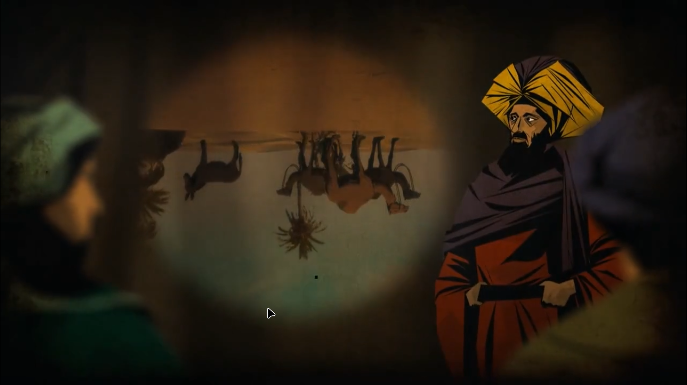
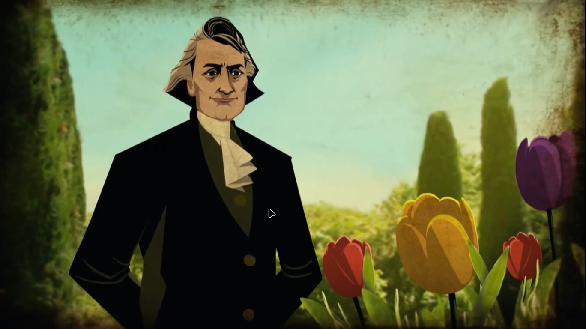
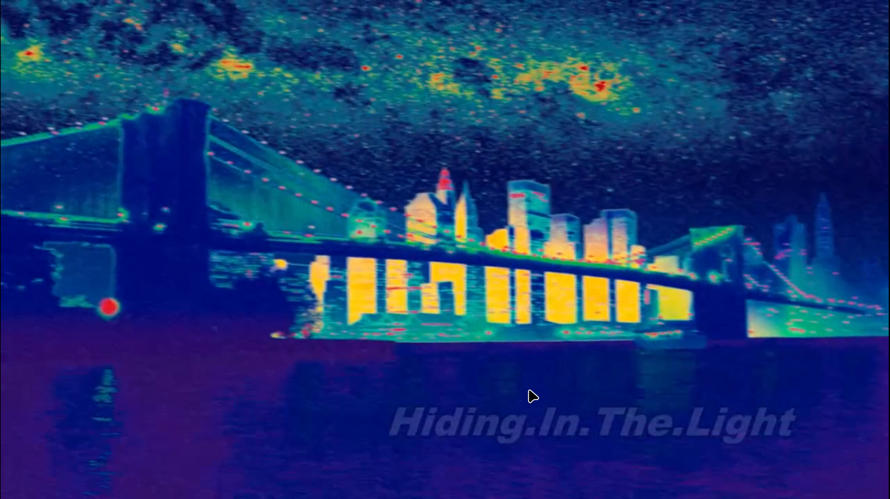

This new way of seeing the word is still continous , Heros who have shows us these great things we born at different times .
How those hunter gatheres : have made this world
Contributions to this : Changes in whether , controlling fire ,inventing tools, language ,farming : everything have played its role
Motze [400: B.C.E] Chinese philosopher : Camera obscura : was the first camera prototype
A new chinese emperror unified the china ,and burned all other books and ideologies .
For progress of science freedom of thought is essential
GOLDEN AGE OF ISLAM [8th - 13th : century] : freedom to explore and share ideas
Ibn al-Haytham[965 AD-1040] Iraq : Asked the question how do we see
People before Ibn al-Haytham believed that light rays come out of our eyes and after bouning back through the objects came back to our eyes .
[ BRILLIANT LOGIC ] Ibn al-Haytham 's logic was that stars as so far away that light can not go and come back that quickly
He didn't stop there , he made methods and devices so that light itself can reveal its secrets
[Al - is a sign of those times when the arabian language was the language of the science ] Algebra , Alchemy ,Alcohol
Ibn al-Haytham made a tent setup ,such that only one light beam can enter into the tent
He prooved that light travels in a straight line
He made his own Camera Obscura
In 1609 Galilio used the same telescope to reveal secrets
Ibn al-Haytham : created systematic method to test the truth Scientifc method is very powerful
All the moden human powers are a byproduct of scientifc thinking
Smallest part of light is photon : as soon as it leaves an atom ,it starts travelling at speed of light ,photon never travells at any other speed ,nor we know of any other things that directly reaches 0 to top speed .
When we try to move other particle at speed of light then they became heavier, their resistance increases. (in any test , we are unable to make any particle's speed to speed of light)
We also don't know why there is a cosmic speed limit , why time stops why travelling at speed of light
What is light?
Since childhood newton had a good relationship/fascination with light
Newton was the first to found out that white light contains all the colors of a rainbow {this was a big discovery}
He named these colors SPECTRUM
Newton's work have prooved that sun's light have different colors,,and everybody knew that sun's light contains heat .
William Herschel asked the question : when some colors have more heat
He found that red light contains more heat the others
William Herschel found that there is something below the red color of the SPECTRUM . He found infrared (meaning of word : below)
Our eyes cannot see infrared but our skin can feel its warmth {This was a big discovery but light had many more mystery}
at the same time of William Herschel there Joseph von Fraunhofer[1987-1826] :physicist and optical lens manufacturer
just like length of sound waves decide its pitch , same as , wavelength of light decides its color
Q:WHY PRISM SPLITS COLOR
A
Sound Waves : don't travel in vaccume , they need a medium like air ,water ,stone molecules .
Light waves : don't require a medium ,they can travel in empty space .
Wavelength of light is much much smaller then sound waves [lightwaves : 400 to 700 nanometers ,,50K lightwaves can fit in half cm space ][soundwaves : 17 m to 17 mm ]
When light travells through air or space ,then all of its colors move with the same speed
In Prism : each color travells at a different speed
brHow do we get these many colors in nature
Light comming from sun comes to earth with different wavelengths,flower absorb red and less energy waves but releases purple and high energy waves
Inside glass purple light which is carried by smallest waves ,became slower then red light(largest waves),, due to the difference in speed ,each light waves travels differently,this is how prism works
Physics and astronomy mixed together formed astrophysics
Fraunhofer asked what is the message written in this black lines ,these lightwaves are formed when these color of lightwaves are absorbed ,this happens in atomic scale
Lets take hydrogen atom : hydrogen is the most found atom in the cosmos
We are inside atom ,it is impossible to understand through common sense
Electrons are never in any single orbit , it dissapears from one orbit and reappears in other orbit
Its like in elevator we are going from 2nd floor to 4th without visiting 3rd floor
these elevator only stops at some levels ,electrons only moves in some fixed orbit ,that is different in differnt elements , that is why we have differenet different types of elements
elements's chemistry is decided by its orbit , bigger the orbit size : higher the energy of the electron
electrons need energy to go to the bigger orbit ,electron loose energy while comming to smaller orbit
Electron only go to bigger orbit when atom absorb ligh energy ,but we don't know why it goes to smaller orbits ,we just know that whever this happens a light wave is made , whose color is equals to the energy difference between the orbits

from sun's surface all color light waves are emmited , if we see sun's light through a prism then we will be able to see its spectrum
if you till enlarge this spectrum through telescope ,then you will be able to see the dance of electron inside and atom ,when energy of electron is less and it reaches into smaller orbit ,the the released lightwaves are dispersed ,mostly not reaches to us ,due to this a gap is created and black lines are visible in spectrum ,these black lines are shadows create by hydogen in sun's atmosphere.
Sodium{salt} atoms create different types of shadows ,there atoms dance differently
When you see a star through a spectroscope ,its atomsphere's elements black lines are visible
Fraunhofer 's black lines are the elments's atomic signature in the cosmos .these lines tell us what a thing is made up of
Because of Fraunhofer we understood what other planets and worlds are made up of and wheteher moving closer or farther then us
Light is of various types (all types just have difference in wavelength (but this difference is very big ) ),much more types that are visible to eyes
Infrared light : William Herschel
X ray light
Radio light
Gamma Ray light
THIS IS NOT SEEING THE SAME THING THROUGH DIFFERENT LENSES
These different types of light tells us about the different features and natures of the universe
Gamma ray Light : shows explosions of different galaxy ,that are not seen otherwise
Mircowave light : we can see the time of birth of the universe
WE HAVE JUST OPENED OUR EYES